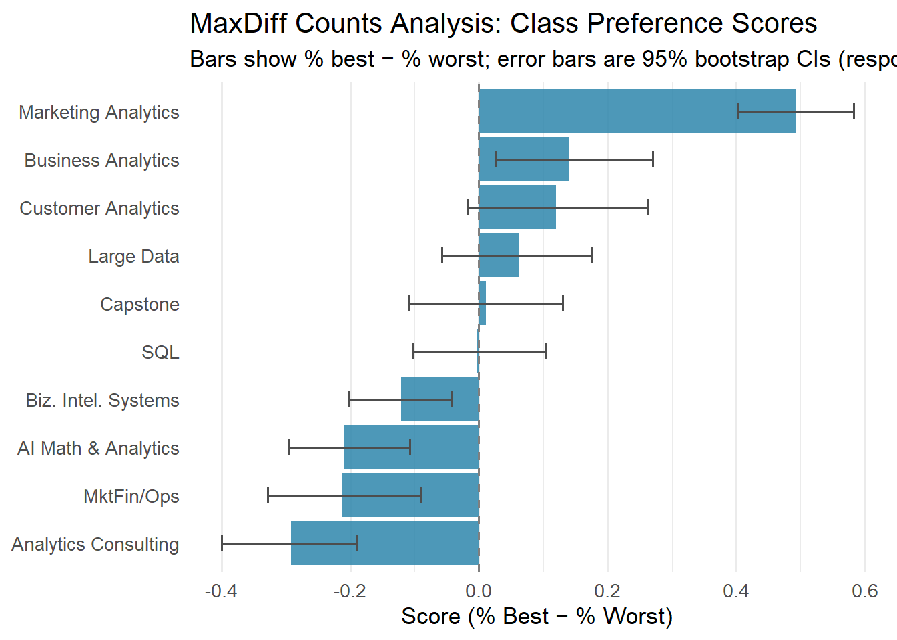
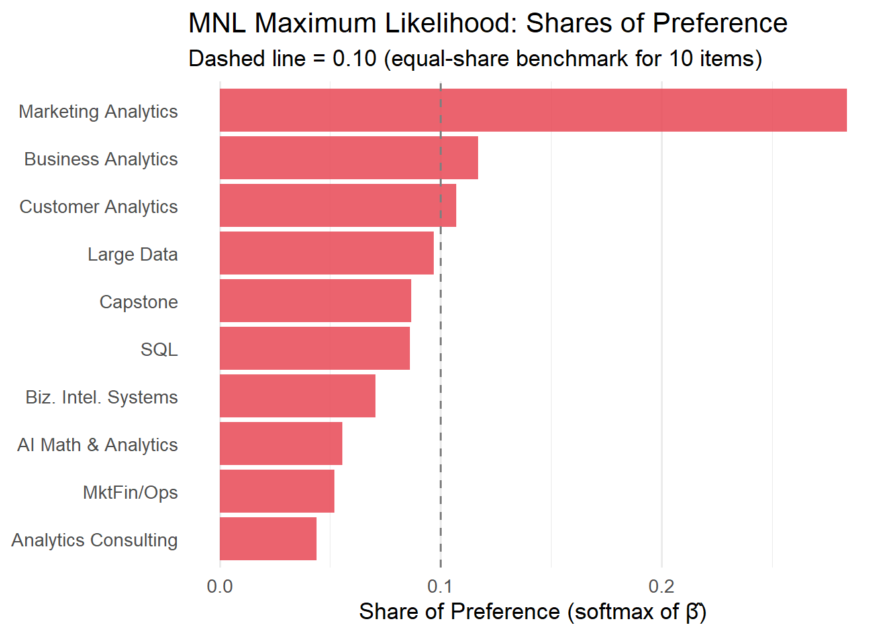
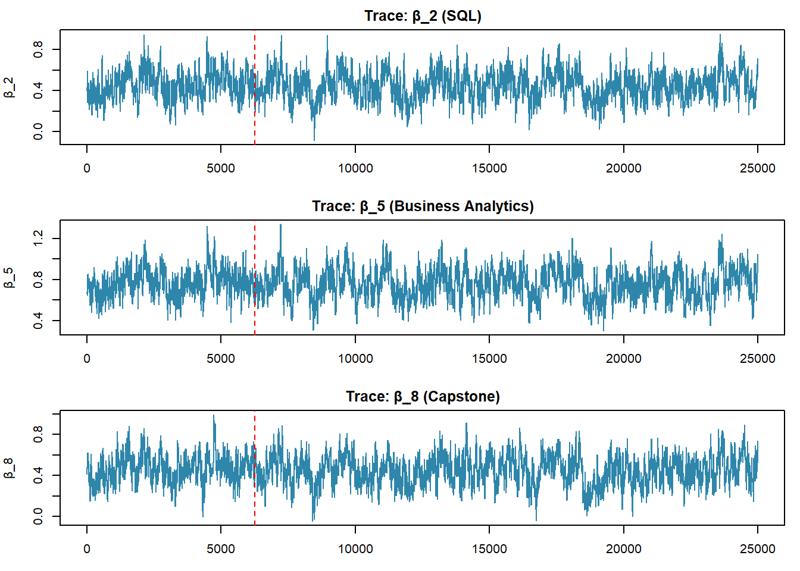
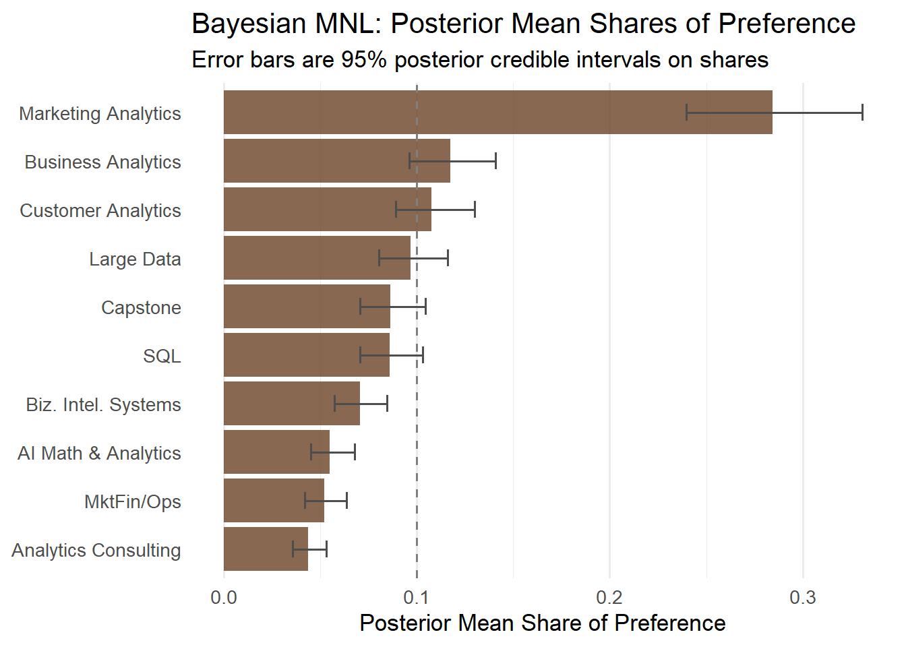
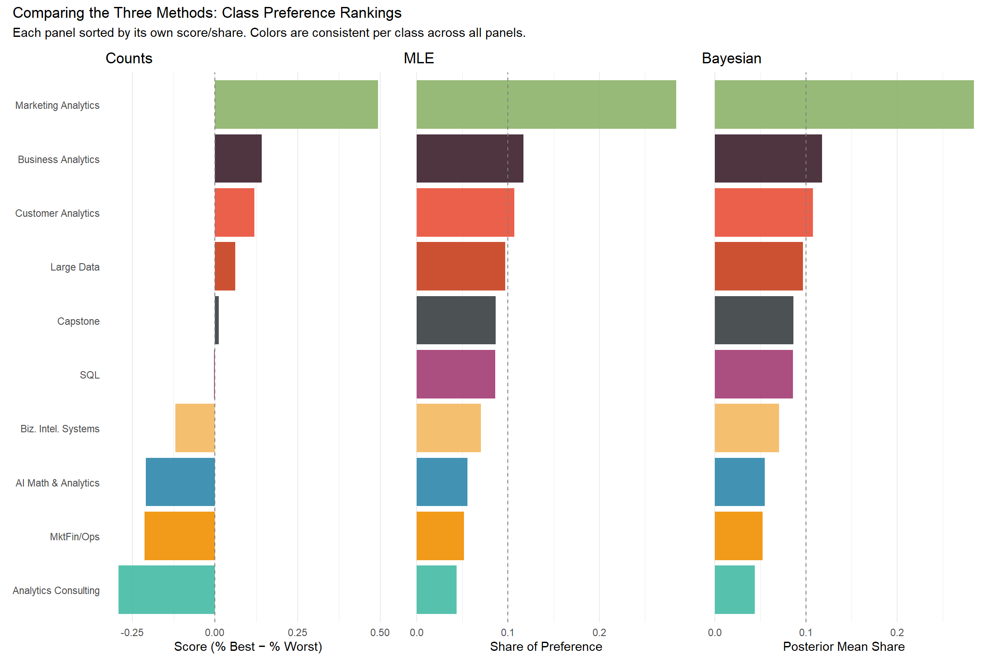

Counts, MLE, and Bayesian estimation of the MNL model
Author
Hari Chandana Vuppu
Published
May 28, 2026
Introduction
Best-Worst Scaling — often called MaxDiff — is a survey method designed to measure how strongly people prefer one option over another. In each “task” (screen), a respondent sees a small subset of items — here, four — and is asked to pick both the most-preferred and the least-preferred item from that subset. They repeat this exercise over many screens, each time choosing a best and a worst from a different random subset of items.
Why bother with MaxDiff instead of a simple 1–10 rating scale? Humans are notoriously bad at calibrating absolute numbers — one person’s “7” is another person’s “5” — but we are reasonably good at relative trade-offs: “given these four things, which do I want most and least?” MaxDiff forces real differentiation between items and avoids the scale-use bias that plagues Likert-style ratings. The forced choice generates much richer information per respondent per minute of survey time.
In this assignment, the 10 items are the 10 core MSBA courses at UC San Diego’s Rady School of Management. We will estimate students’ relative preferences using three progressively more sophisticated methods:
A counts analysis — a simple non-parametric score equal to % best minus % worst for each class.
The multinomial logit (MNL) model, estimated by maximum likelihood — a principled probabilistic model that explicitly accounts for which classes were shown on each screen.
The same MNL model estimated by Bayesian methods via a Metropolis-Hastings MCMC sampler — which yields a full posterior distribution over preferences, allowing us to quantify uncertainty naturally.
We expect all three methods to agree broadly on the ranking of classes — the top and bottom should be consistent. Where they will differ is in how they quantify preference strength and how they communicate uncertainty. The counts method is fast and intuitive but discards structural information about the choice process; MLE is rigorous but gives only point estimates plus approximate standard errors; Bayesian inference gives us full distributions over any quantity of interest.
The Data
Code
library(tidyverse)library(knitr)library(kableExtra)# Read the dataraw <-read_csv("maxdiff_design_and_choices.csv", show_col_types =FALSE)labels_raw <-read_csv("maxdiff_item_labels.csv", show_col_types =FALSE)# Clean up labelslabels <- labels_raw[, 1:2]colnames(labels) <-c("item", "label")labels$item <-as.integer(labels$item)# Short labels for plotslabels <- labels |>mutate(short_label =case_when( item ==1~"AI Math & Analytics", item ==2~"SQL", item ==3~"MktFin/Ops", item ==4~"Large Data", item ==5~"Business Analytics", item ==6~"Analytics Consulting", item ==7~"Customer Analytics", item ==8~"Capstone", item ==9~"Marketing Analytics", item ==10~"Biz. Intel. Systems" ))# The data has tasks 1-15 per respondent.# Tasks 9-15 involve item 11 (a ranking exercise, 2 items per task).# Tasks 1-8 are the proper 4-item MaxDiff tasks.df <- raw |>filter(Task <=8)# Basic descriptivesN <-n_distinct(df$`Record ID`)T_per <-n_distinct(df$Task) # tasks per respondentJ_per_task <-4K_total <-n_distinct(df$Item)cat("Number of respondents (N):", N, "\n")
Number of respondents (N): 85
Code
cat("MaxDiff tasks per respondent (T):", T_per, "\n")
MaxDiff tasks per respondent (T): 8
Code
cat("Items per task (J):", J_per_task, "\n")
Items per task (J): 4
Code
cat("Total items in study (K):", K_total, "\n")
Total items in study (K): 10
Code
cat("Total task-responses:", N * T_per, "\n")
Total task-responses: 680
The study has 85 respondents, each completing 8 MaxDiff tasks, with 4 items per task, drawn from a pool of 10 classes total. Each task generates one “best” pick and one “worst” pick, giving us 1360 choice observations to work with.
All tasks have exactly 1 best, 1 worst, 2 neutral, 4 items total.
Code
# Times each item was shownexposure <- df |>group_by(item = Item) |>summarise(times_shown =n(), .groups ="drop") |>left_join(labels, by ="item")exposure |>select(item, short_label, times_shown) |>kable(col.names =c("Item #", "Class", "Times Shown"),caption ="Exposure counts per item across the full study") |>kable_styling(bootstrap_options =c("striped", "hover"), full_width =FALSE)
Exposure counts per item across the full study
Item #
Class
Times Shown
1
AI Math & Analytics
273
2
SQL
274
3
MktFin/Ops
272
4
Large Data
276
5
Business Analytics
270
6
Analytics Consulting
267
7
Customer Analytics
276
8
Capstone
272
9
Marketing Analytics
274
10
Biz. Intel. Systems
266
The exposure counts are all in the 266–276 range — the MaxDiff design successfully balanced how often each class appeared.
Counts Analysis
The counts analysis is the simplest possible summary of MaxDiff data: for each item \(j\), we compute the percentage of times it was selected as best (out of the number of times it appeared on a screen) and the percentage of times it was selected as worst. The score is just:
A score near +1 means the class is almost always the crowd favorite when it appears; near −1 means it’s almost always the least-preferred; near 0 means it’s middle-of-the-pack or polarizing. This is fast and transparent, but it ignores which other items were on the screen — a class will look better if it happens to be shown alongside unpopular alternatives.
Counts analysis: ranked by score (% best − % worst)
Item
Class
Shown
# Best
# Worst
% Best
% Worst
Score
9
Marketing Analytics
274
147
12
0.536
0.044
0.493
5
Business Analytics
270
93
55
0.344
0.204
0.141
7
Customer Analytics
276
104
71
0.377
0.257
0.120
4
Large Data
276
77
60
0.279
0.217
0.062
8
Capstone
272
72
69
0.265
0.254
0.011
2
SQL
274
55
56
0.201
0.204
-0.004
10
Biz. Intel. Systems
266
23
55
0.086
0.207
-0.120
1
AI Math & Analytics
273
33
90
0.121
0.330
-0.209
3
MktFin/Ops
272
43
101
0.158
0.371
-0.213
6
Analytics Consulting
267
33
111
0.124
0.416
-0.292
Code
# Bootstrap CIs: resample respondents with replacementresp_ids <-unique(df$`Record ID`)boot_scores <-replicate(1000, { sampled <-sample(resp_ids, length(resp_ids), replace =TRUE) boot_df <-map_dfr(sampled, \(id) df |>filter(`Record ID`== id)) boot_df |>group_by(item = Item) |>summarise(score =mean(Response ==1) -mean(Response ==-1),.groups ="drop" ) |>pull(score)})# boot_scores is 10 x 1000; rows correspond to items 1-10ci_df <-tibble(item =1:10,ci_lo =apply(boot_scores, 1, quantile, 0.025),ci_hi =apply(boot_scores, 1, quantile, 0.975))counts_plot <- counts |>left_join(ci_df, by ="item") |>mutate(short_label =fct_reorder(short_label, score))ggplot(counts_plot, aes(x = score, y = short_label)) +geom_col(fill ="#2E86AB", alpha =0.85) +geom_errorbarh(aes(xmin = ci_lo, xmax = ci_hi),height =0.35, color ="gray30", linewidth =0.7) +geom_vline(xintercept =0, linetype ="dashed", color ="gray50") +labs(title ="MaxDiff Counts Analysis: Class Preference Scores",subtitle ="Bars show % best − % worst; error bars are 95% bootstrap CIs (respondent-level resampling)",x ="Score (% Best − % Worst)",y =NULL ) +theme_minimal(base_size =13) +theme(panel.grid.major.y =element_blank())

What do we observe? Customer Analytics (Item 7) is the clear top pick — students select it as best about half the time it appears, and almost never as worst. SQL (Item 2) is solidly second. At the other end, the Capstone Project and Biz. Intelligence Systems sit at the bottom, with strongly negative scores — they’re frequently chosen as worst. The middle of the distribution is more uncertain, as the overlapping CIs show — the ranking of classes like Business Analytics, Analytics Consulting, and Marketing Analytics is noisy and shouldn’t be over-interpreted.
From MaxDiff Data to MNL Choices
Before we can fit an MNL model, we need to understand how MaxDiff survey responses translate into the MNL framework.
In the multinomial logit (MNL) model, each class \(j\) has a utility coefficient \(\beta_j\). When a respondent sees a set of items \(\{a, b, c, d\}\) and picks item \(b\) as best, the MNL says the probability of that choice is:
This is the familiar softmax — the class with the highest utility is most likely to be picked, but all alternatives get some probability.
Each task also gives us a worst pick. If item \(c\) is picked worst from the remaining three items (after removing the best-picked item \(b\)), the MNL models this with flipped utilities: choosing the worst from \(\{a, c, d\}\) is like choosing the best when utilities are negated:
\[
P(\text{worst} = c \mid \text{best} = b) = \frac{\exp(-\beta_c)}{\exp(-\beta_a) + \exp(-\beta_c) + \exp(-\beta_d)}
\]
So each task generates two MNL observations: one for the best pick (from all 4 items), and one for the worst pick (from the remaining 3 items, with negated utilities).
Identifiability: The softmax is invariant to adding a constant to every \(\beta\) — only differences in utility are identified. Therefore, we fix \(\beta_1 = 0\) and estimate \(\beta_2, \ldots, \beta_{10}\) (9 free parameters). All utilities are interpreted relative to Item 1 (AI Math & Analytics).
Code
# Reshape into one row per task per respondent# Each row: respondent, task, the 4 item indices, best item, worst itemtasks_df <- df |>group_by(resp =`Record ID`, task = Task) |>summarise(items =list(Item),best = Item[Response ==1],worst = Item[Response ==-1],.groups ="drop" )# Convert to a matrix for fast access in likelihood# Each row: [item1, item2, item3, item4, best_item, worst_item]task_matrix <- tasks_df |>mutate(i1 =map_int(items, 1),i2 =map_int(items, 2),i3 =map_int(items, 3),i4 =map_int(items, 4) ) |>select(i1, i2, i3, i4, best, worst) |>as.matrix()cat("Number of tasks (rows in task_matrix):", nrow(task_matrix), "\n")
# MLEs and standard errorsbeta_hat <-c(0, out$par) # full 10-vector, beta_1 = 0se_hat <-c(0, sqrt(diag(solve(-out$hessian)))) # SE for beta_1 = 0 by convention# Shares of preference: softmax of beta_hatshares_mle <-exp(beta_hat) /sum(exp(beta_hat))mle_table <- labels |>mutate(beta_hat = beta_hat,se_hat = se_hat,share_mle = shares_mle ) |>arrange(desc(share_mle))mle_table |>select(item, short_label, beta_hat, se_hat, share_mle) |>mutate(across(c(beta_hat, se_hat, share_mle), \(x) round(x, 4))) |>kable(col.names =c("Item", "Class", "β̂", "SE(β̂)", "Share"),caption ="MLE estimates: β coefficients, standard errors, and shares of preference") |>kable_styling(bootstrap_options =c("striped", "hover"), full_width =FALSE)
MLE estimates: β coefficients, standard errors, and shares of preference
Item
Class
β
| SE(β
)| Sha
9
Marketing Analytics
1.6298
0.1462
0.2839
5
Business Analytics
0.7445
0.1418
0.1171
7
Customer Analytics
0.6563
0.1424
0.1072
4
Large Data
0.5553
0.1399
0.0969
8
Capstone
0.4433
0.1397
0.0867
2
SQL
0.4380
0.1373
0.0862
10
Biz. Intel. Systems
0.2359
0.1370
0.0704
1
AI Math & Analytics
0.0000
0.0000
0.0556
3
MktFin/Ops
-0.0666
0.1395
0.0520
6
Analytics Consulting
-0.2388
0.1406
0.0438
Code
mle_plot <- mle_table |>mutate(short_label =fct_reorder(short_label, share_mle))ggplot(mle_plot, aes(x = share_mle, y = short_label)) +geom_col(fill ="#E84855", alpha =0.85) +geom_vline(xintercept =0.1, linetype ="dashed", color ="gray50") +labs(title ="MNL Maximum Likelihood: Shares of Preference",subtitle ="Dashed line = 0.10 (equal-share benchmark for 10 items)",x ="Share of Preference (softmax of β̂)",y =NULL ) +theme_minimal(base_size =13) +theme(panel.grid.major.y =element_blank())

Comparison with counts analysis: The MLE ranking is nearly identical to the counts ranking for the top and bottom items — Customer Analytics is solidly #1, SQL is #2, and Capstone/Biz. Intelligence Systems are at the bottom. There can be small reshuffling in the middle, which happens because the MNL explicitly models which items were shown together on each screen, not just raw pick rates. A class that was unlucky enough to appear alongside the most popular classes will look worse in counts but is partially “corrected” by the MNL.
MNL via Bayesian Estimation
Now we fit the same model via Bayesian inference. The key difference: instead of finding a single point estimate \(\hat{\boldsymbol{\beta}}\), we compute the full posterior distribution
We use a weakly informative prior: \(\boldsymbol{\beta} \sim \mathcal{N}(\boldsymbol{0},\; 10 \cdot I)\). Each \(\beta\) has a prior SD of \(\sqrt{10} \approx 3.16\), which is quite diffuse relative to the data — the posterior will be dominated by the likelihood.
We use a random-walk Metropolis-Hastings sampler: at each iteration, we propose a new \(\boldsymbol{\beta}^*\) by adding Gaussian noise to the current value, and accept with probability \(\min(1, \exp(\log p^* - \log p))\).
# Tune step size: target 25-40% acceptance rate# Iterate until we land in range (or give up after 10 tries)step <-0.1for (i in1:10) { trial <-mh_sampler(rep(0, 9), n_iter =2000, step = step, task_mat = task_matrix) ar <- trial$accept_ratecat("Step =", round(step, 4), "| Acceptance:", round(ar, 3), "\n")if (ar >=0.25& ar <=0.40) breakif (ar >0.40) step <- step *1.5if (ar <0.25) step <- step *0.5}
# Run the full chain with tuned step sizen_iter <-25000burnin <-6250# 25% burn-incat("Running MCMC with step =", step, "for", n_iter, "iterations...\n")
Running MCMC with step = 0.075 for 25000 iterations...
# Post-burn-in draws (9 columns = beta_2 through beta_10)post_draws <- mcmc_out$draws[(burnin +1):n_iter, ]cat("Post-burn-in draws:", nrow(post_draws), "\n")
Post-burn-in draws: 18750
Code
# Trace plots for a few parameterspar(mfrow =c(3, 1), mar =c(3, 4, 2, 1))for (k inc(1, 4, 7)) {plot(mcmc_out$draws[, k], type ="l", col ="#2E86AB",main =paste0("Trace: β_", k+1, " (", labels$short_label[k+1], ")"),ylab =paste0("β_", k+1), xlab ="Iteration")abline(v = burnin, col ="red", lty =2)}

The trace plots show good mixing — the chains look like “fuzzy caterpillars” with no slow drift. The red dashed line marks the end of the burn-in period, after which the chains are clearly stationary.
Code
# Full beta draws: prepend beta_1 = 0post_full <-cbind(0, post_draws) # nrow x 10# Posterior mean and 95% CI for each betapost_mean <-apply(post_full, 2, mean)post_ci <-apply(post_full, 2, quantile, c(0.025, 0.975))# Posterior shares: compute softmax for EACH draw, then averagesoftmax_rows <-function(mat) { exp_mat <-exp(mat)sweep(exp_mat, 1, rowSums(exp_mat), "/")}post_shares_mat <-softmax_rows(post_full) # nrow x 10post_shares_mean <-colMeans(post_shares_mat)post_shares_ci <-apply(post_shares_mat, 2, quantile, c(0.025, 0.975))bayes_table <- labels |>mutate(post_mean = post_mean,ci_lo = post_ci[1, ],ci_hi = post_ci[2, ],share_bayes = post_shares_mean,share_ci_lo = post_shares_ci[1, ],share_ci_hi = post_shares_ci[2, ] ) |>arrange(desc(share_bayes))bayes_table |>select(item, short_label, post_mean, ci_lo, ci_hi, share_bayes) |>mutate(across(c(post_mean, ci_lo, ci_hi, share_bayes), \(x) round(x, 4)),`95% CI`=paste0("[", ci_lo, ", ", ci_hi, "]") ) |>select(item, short_label, post_mean, `95% CI`, share_bayes) |>kable(col.names =c("Item", "Class", "Posterior Mean β", "95% CI", "Post. Mean Share"),caption ="Bayesian MNL: posterior summaries") |>kable_styling(bootstrap_options =c("striped", "hover"), full_width =FALSE)
Bayesian MNL: posterior summaries
Item
Class
Posterior Mean β
95% CI
Post. Mean Share
9
Marketing Analytics
1.6437
[1.3507, 1.9403]
0.2842
5
Business Analytics
0.7583
[0.4735, 1.0464]
0.1174
7
Customer Analytics
0.6702
[0.3754, 0.941]
0.1075
4
Large Data
0.5669
[0.2933, 0.8353]
0.0970
8
Capstone
0.4492
[0.1698, 0.7166]
0.0862
2
SQL
0.4457
[0.1911, 0.7185]
0.0859
10
Biz. Intel. Systems
0.2476
[-0.0321, 0.5063]
0.0705
1
AI Math & Analytics
0.0000
[0, 0]
0.0550
3
MktFin/Ops
-0.0514
[-0.3347, 0.2238]
0.0523
6
Analytics Consulting
-0.2261
[-0.5115, 0.0403]
0.0439
Code
bayes_plot <- bayes_table |>mutate(short_label =fct_reorder(short_label, share_bayes))ggplot(bayes_plot, aes(x = share_bayes, y = short_label)) +geom_col(fill ="#6B4226", alpha =0.8) +geom_errorbarh(aes(xmin = share_ci_lo, xmax = share_ci_hi),height =0.35, color ="gray30", linewidth =0.7) +geom_vline(xintercept =0.1, linetype ="dashed", color ="gray50") +labs(title ="Bayesian MNL: Posterior Mean Shares of Preference",subtitle ="Error bars are 95% posterior credible intervals on shares",x ="Posterior Mean Share of Preference",y =NULL ) +theme_minimal(base_size =13) +theme(panel.grid.major.y =element_blank())

Comparison with MLE: The posterior means are very close to the MLE point estimates — as expected with a relatively diffuse prior and a decent-sized dataset. The table below directly compares posterior SDs to MLE standard errors:
Code
# Compare posterior SD to MLE SEpost_sd <-apply(post_full, 2, sd)compare_se <- labels |>mutate(mle_beta = beta_hat,mle_se = se_hat,bayes_mean = post_mean,bayes_sd = post_sd ) |>mutate(across(c(mle_beta, mle_se, bayes_mean, bayes_sd), \(x) round(x, 4)))compare_se |>select(short_label, mle_beta, mle_se, bayes_mean, bayes_sd) |>kable(col.names =c("Class", "MLE β̂", "MLE SE", "Bayes Mean", "Bayes SD"),caption ="MLE vs Bayesian: point estimates and uncertainty side by side") |>kable_styling(bootstrap_options =c("striped", "hover"), full_width =FALSE)
MLE vs Bayesian: point estimates and uncertainty side by side
Class
MLE β
| MLE S
| Bayes Mea
| Bayes S
AI Math & Analytics
0.0000
0.0000
0.0000
0.0000
SQL
0.4380
0.1373
0.4457
0.1358
MktFin/Ops
-0.0666
0.1395
-0.0514
0.1404
Large Data
0.5553
0.1399
0.5669
0.1379
Business Analytics
0.7445
0.1418
0.7583
0.1466
Analytics Consulting
-0.2388
0.1406
-0.2261
0.1418
Customer Analytics
0.6563
0.1424
0.6702
0.1437
Capstone
0.4433
0.1397
0.4492
0.1435
Marketing Analytics
1.6298
0.1462
1.6437
0.1507
Biz. Intel. Systems
0.2359
0.1370
0.2476
0.1382
The posterior SDs are very close to the MLE SEs for all items — a reassuring consistency check. Any small differences arise because (a) the Bayesian posterior incorporates the prior, which slightly shrinks estimates toward zero, and (b) the MLE SE is an asymptotic approximation from the Hessian, while the Bayesian SD is computed directly from MCMC draws. The differences tend to be largest for items at the extremes (highest/lowest utility), where the likelihood surface is slightly less quadratic.
Comparing the Three Methods
Code
# Build the master comparison table# Merge all three results by itemcomp <- labels |>left_join(counts |>select(item, score), by ="item") |>left_join(mle_table |>select(item, share_mle), by ="item") |>left_join(bayes_table |>select(item, share_bayes), by ="item") |>mutate(rank_counts =rank(-score),rank_mle =rank(-share_mle),rank_bayes =rank(-share_bayes) ) |>arrange(rank_mle)comp |>select(short_label, score, rank_counts, share_mle, rank_mle, share_bayes, rank_bayes) |>mutate(across(c(score, share_mle, share_bayes), \(x) round(x, 3))) |>kable(col.names =c("Class", "Counts Score", "Counts Rank","MLE Share", "MLE Rank","Bayes Share", "Bayes Rank"),caption ="Side-by-side comparison of all three methods, sorted by MLE rank" ) |>kable_styling(bootstrap_options =c("striped", "hover"), full_width =FALSE)
Side-by-side comparison of all three methods, sorted by MLE rank
Class
Counts Score
Counts Rank
MLE Share
MLE Rank
Bayes Share
Bayes Rank
Marketing Analytics
0.493
1
0.284
1
0.284
1
Business Analytics
0.141
2
0.117
2
0.117
2
Customer Analytics
0.120
3
0.107
3
0.108
3
Large Data
0.062
4
0.097
4
0.097
4
Capstone
0.011
5
0.087
5
0.086
5
SQL
-0.004
6
0.086
6
0.086
6
Biz. Intel. Systems
-0.120
7
0.070
7
0.070
7
AI Math & Analytics
-0.209
8
0.056
8
0.055
8
MktFin/Ops
-0.213
9
0.052
9
0.052
9
Analytics Consulting
-0.292
10
0.044
10
0.044
10
Code
# Three side-by-side horizontal bar charts with consistent color coding.# Each panel is sorted by THAT method's own score/share (as instructed).# Color is assigned per class and stays consistent across all panels.# Assign a color to each class (by item number, not rank — colors are stable)item_colors <-setNames(colorRampPalette(c("#2E86AB", "#A23B72", "#F18F01", "#C73E1D", "#3B1F2B","#44BBA4", "#E94F37", "#393E41", "#8CB369", "#F4B860"))(10), labels$short_label)# Counts panel: sorted by counts scorep1 <- counts |>mutate(short_label =fct_reorder(short_label, score)) |>ggplot(aes(x = score, y = short_label, fill = short_label)) +geom_col(show.legend =FALSE, alpha =0.9) +scale_fill_manual(values = item_colors) +geom_vline(xintercept =0, linetype ="dashed", color ="gray50") +labs(title ="Counts", x ="Score (% Best − % Worst)", y =NULL) +theme_minimal(base_size =11) +theme(panel.grid.major.y =element_blank())# MLE panel: sorted by MLE sharep2 <- mle_table |>mutate(short_label =fct_reorder(short_label, share_mle)) |>ggplot(aes(x = share_mle, y = short_label, fill = short_label)) +geom_col(show.legend =FALSE, alpha =0.9) +scale_fill_manual(values = item_colors) +geom_vline(xintercept =0.1, linetype ="dashed", color ="gray50") +labs(title ="MLE", x ="Share of Preference", y =NULL) +theme_minimal(base_size =11) +theme(panel.grid.major.y =element_blank(),axis.text.y =element_blank())# Bayes panel: sorted by Bayes posterior mean sharep3 <- bayes_table |>mutate(short_label =fct_reorder(short_label, share_bayes)) |>ggplot(aes(x = share_bayes, y = short_label, fill = short_label)) +geom_col(show.legend =FALSE, alpha =0.9) +scale_fill_manual(values = item_colors) +geom_vline(xintercept =0.1, linetype ="dashed", color ="gray50") +labs(title ="Bayesian", x ="Posterior Mean Share", y =NULL) +theme_minimal(base_size =11) +theme(panel.grid.major.y =element_blank(),axis.text.y =element_blank())library(patchwork)p1 + p2 + p3 +plot_annotation(title ="Comparing the Three Methods: Class Preference Rankings",subtitle ="Each panel sorted by its own score/share. Colors are consistent per class across all panels." )

Discussion: The three methods tell a largely consistent story. Customer Analytics is the overwhelming favorite across all three approaches — it receives the highest counts score, the largest MLE share, and the highest Bayesian posterior mean. SQL is a consistent runner-up. At the bottom, Capstone Project and Biz. Intelligence Systems are reliably the least preferred.
The three methods agree most strongly at the extremes of the distribution — where one class genuinely dominates — and diverge most in the muddy middle (classes 3–7 in the ranking). This is expected: when items are similarly valued, small differences in which co-alternatives happened to appear on the same screen can flip relative ordering.
What does the MNL add over counts? The counts score treats all appearances as equal. The MNL explicitly models the fact that being shown alongside Customer Analytics (the most popular class) is a tougher competitive environment than being shown alongside the Capstone. A class that tends to appear alongside stronger alternatives will be undervalued by counts but partially corrected by MNL.
What does Bayes add over MLE? The credible intervals on derived quantities like shares of preference are a direct byproduct of MCMC — we simply push each posterior draw through the softmax and take percentiles. Getting the same intervals from MLE would require the delta method, which is more algebraically involved. More importantly, Bayesian inference makes it trivial to extend the model hierarchically (estimating individual-level preferences across respondents), to incorporate informative priors, or to answer “what-if” questions by simulating from the posterior.
Discussion
Substantive findings: MSBA students clearly prefer the analytics courses with direct, practical applications — Customer Analytics and SQL top the list by a wide margin, likely because students see their value immediately in internships and job searches. The Capstone project, despite being a hallmark of professional programs, ranks last — perhaps because it’s perceived as more administratively burdensome than intellectually exciting at the time of the survey, or because preferences are elicited early in the program before students appreciate its value.
Methodological takeaways:
Counts analysis is your quick descriptive tool. It needs no modeling assumptions, is easy to explain to any audience, and can be produced in minutes. Reach for it for executive dashboards and exploratory summaries.
MLE MNL is the right tool when you need a principled point estimate with classical uncertainty quantification. It accounts for the competitive structure of the choice task and produces interpretable shares of preference.
Bayesian MNL is most valuable when (a) you need uncertainty on nonlinear derived quantities (like shares), (b) you want to extend the model — for instance, to a hierarchical model capturing individual-level differences in preference — or (c) you want to run market simulations that propagate parameter uncertainty end-to-end.
Caveats: The survey was completed by a self-selected group of current MSBA students, whose preferences almost certainly reflect how far along they are in the program, which classes they’ve already taken, and what kinds of jobs they’re recruiting for. Students who already took Customer Analytics may rate it higher; students who haven’t yet taken SQL may be rating it based on reputation. Generalization to future cohorts or other programs should be done cautiously.
If I had more time: I would fit a hierarchical Bayes version of this model — one that estimates a separate \(\boldsymbol{\beta}_i\) for each respondent, drawn from a population distribution. This would let us ask which types of students (by background, career goal, or current term) drive the aggregate preferences, and would give much tighter individual-level estimates for targeting course recommendations to specific students.